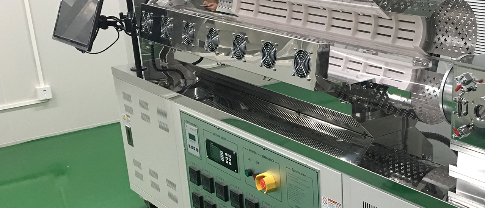
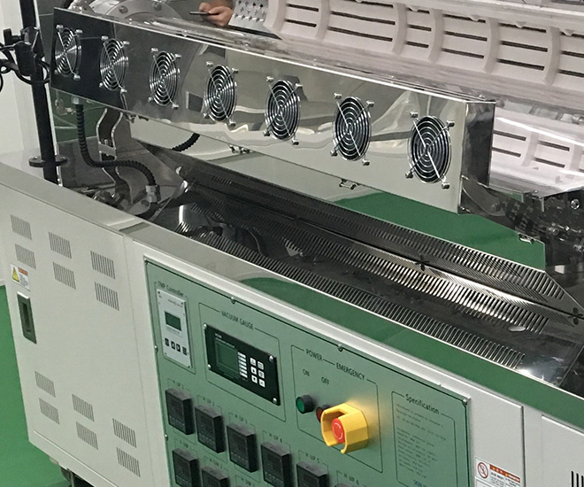
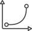

중형장비
Equipment
 중형 장비는 R&D와 생산을 동시에 해결 할 수 있는 제품입니다.
만약, 고객 사정상 연구목적과 생산목적을 동일 장비에서 구현하고 싶으신 경우 중형 장비를 선택하시면 됩니다.
중형장비는 크기도 적당하고 운용도 쉬우며, 대형장비 못지 않은 높은 생산력을 확인하실 수 있습니다.
또한, 소량 시료를 정제하는 데도 무리가 없어 동일 장비에서 오차 없이 기대하시는 좋은 결과를 신속하게 얻으실 수 있습니다.
-

한 장비에서 소량 스케일 정제 및
중.대형 스케일 정제 가능 -
소형과 대형 장비의
중간 가격대 -
연구 목적 및 양산 목적
동시해결 가능 -
주로 기업 연구소에 설치